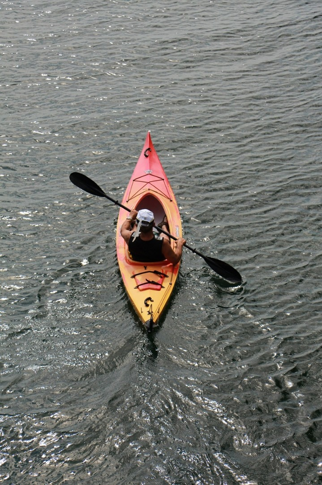
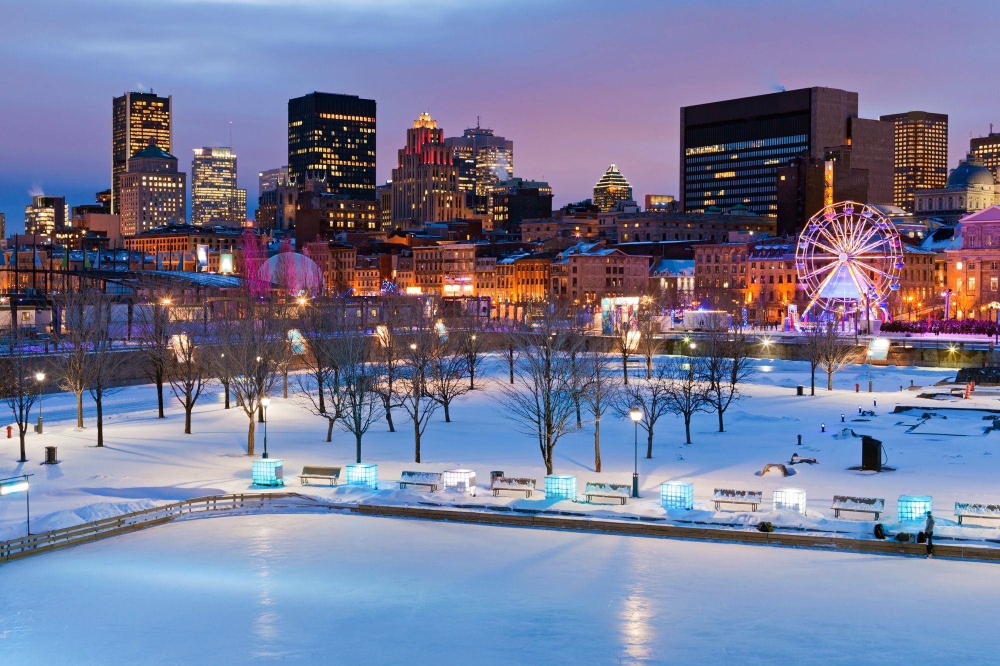
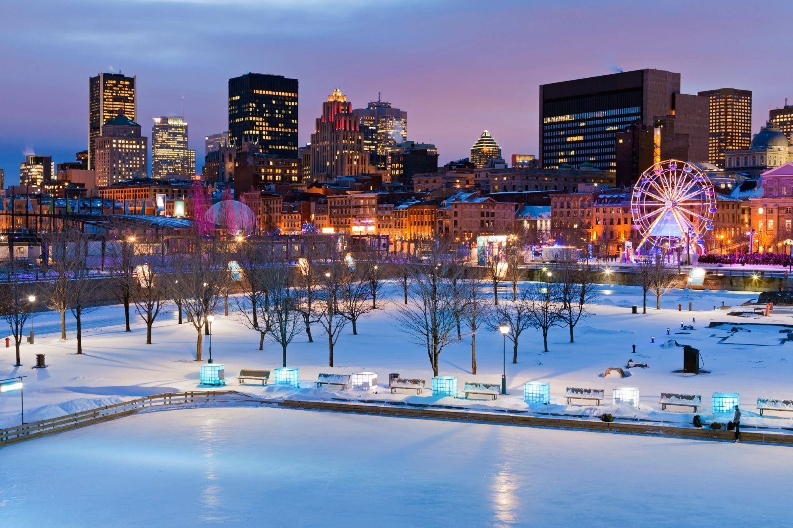

Profitez de votre sortie en kayak pour explorer les environs de Montréal depuis une perspective unique. Admirez les paysages, observez la faune locale et découvrez les attractions accessibles depuis l'eau. Profitez de l'expérience : Le kayak peut être une activité relaxante et rafraîchissante. Prenez le temps de vous détendre, de vous amuser et de profiter de votre temps sur l'eau. En suivant ces conseils, vous êtes prêt à vivre une expérience inoubliable de kayak à Montréal pendant vos vacances.

Partez à la découverte du Quartier des spectacles, le cœur culturel de Montréal, où vous trouverez de nombreux théâtres, salles de concert, galeries d'art, restaurants et bars. Consultez le calendrier des événements pour voir s'il y a des spectacles ou des festivals en cours pendant votre visite.Promenez-vous dans les rues pavées du Vieux-Montréal et admirez l'architecture historique, les boutiques pittoresques et les charmantes places. Ne manquez pas la basilique Notre-Dame, la Place Jacques-Cartier et le musée Pointe-à-Callière, site historique et archéologique de Montréal.
Le dîner à Montréal est une expérience à part entière. Explorez les rues pavées du Vieux-Montréal pour découvrir des restaurants haut de gamme proposant une cuisine française raffinée, ou dirigez-vous vers les quartiers branchés comme le Plateau-Mont-Royal ou le Mile End pour des options plus décontractées, comme des bistros chaleureux, des restaurants de cuisine fusion ou des pizzerias authentiques.


Bateau-Mouche sur le fleuve : Bateau-Mouche propose des croisières sur le fleuve Saint-Laurent, offrant des vues spectaculaires sur la ville de Montréal et ses environs. Vous pouvez choisir parmi différentes options de croisières, y compris des croisières commentées avec des explications sur l'histoire et les sites touristiques de Montréal. Le Petit Navire : Cette compagnie offre des croisières sur des bateaux électriques écologiques, vous permettant de naviguer tranquillement le long du canal Lachine. Leurs croisières offrent une atmosphère détendue et intimiste, idéale pour profiter des paysages de Montréal.

 
